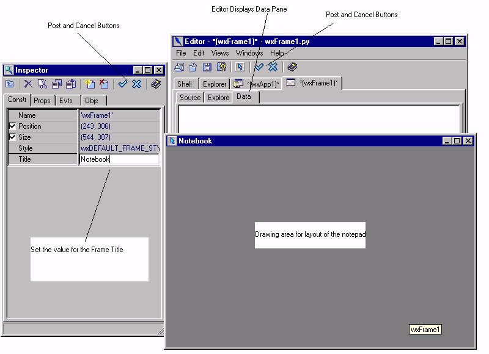

Select the wxFrame1 tab in the Editor to ensure that we are editing
the Frame.
Start the Designer, by selecting the designer button from the Editor
toolbar.
The Frame will be displayed as a drawing area. A new pane will be
displayed in the Editor called the 'Data' pane.
The Inspector Window will display the 'Constructor pane'. This pane
edits the size, position, style, variable name and title of a component.
Edit the field called 'Title'. Give the frame the name 'Notebook'.
The changes must be saved into the application source code. You save
the changes using the 'Post' button. Press the 'Post' button on the
Inspector toolbar. The Designer Windows will close.

You will notice that the source code has been updated to reflect the
title.
The Editor shows that the Source Code is changed by asterix on the
notebook tabs.